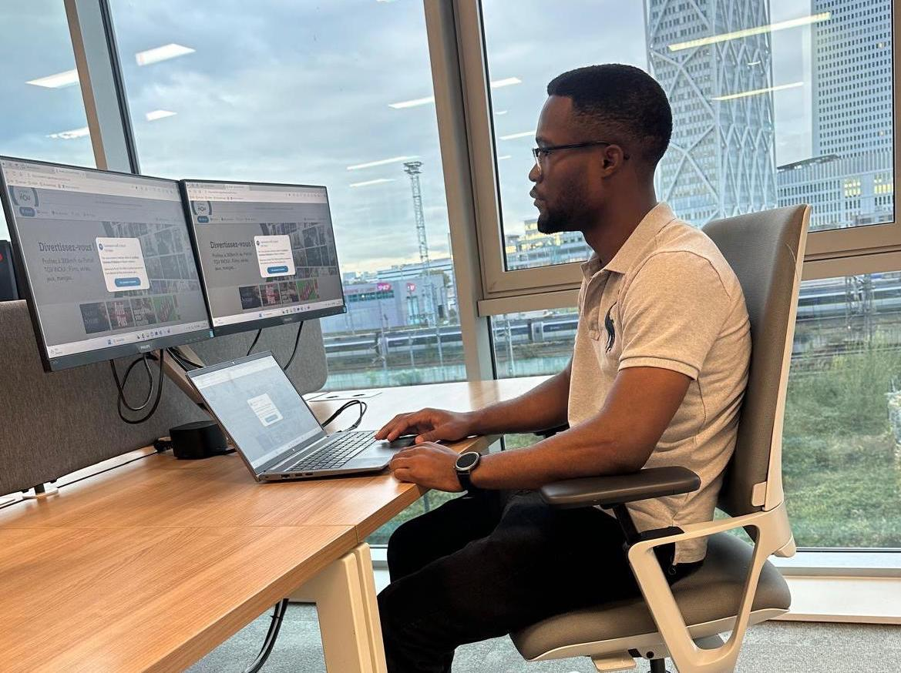

Biographie
Bonjour et bienvenue sur mon portfolio !
Développeur web Full Stack passionné, avec un parcours académique riche, notamment un Master 2 en Architecture Web. Mon parcours m'a permis de développer des compétences solides, tant sur le plan théorique que pratique, dans les domaines du développement et de l'architecture logicielle.
Depuis septembre 2023, j'ai l'opportunité de travailler chez SNCF Connect & Tech en tant qu'alternant assistant développeur Full Stack. Cette expérience m'a permis de participer à des projets clés, tels que la mise en place d'un système de gestion de contenu pour le portail Wi-Fi TGV, ainsi que le support aux équipes en charge des tests E2E. J'ai également eu l'occasion de traiter divers tickets pour les clients TER, TGE et LYRIA, tout en approfondissant mes compétences avec des outils comme React, Playwright et Cucumber.
Avant cela, j'ai eu la chance de contribuer à divers projets, comme la création d'un site de vente de formations en ligne pour BYN Media, ou encore le développement du site web de l'entreprise DEBA Network lors de mes stages. Ces expériences m'ont permis de me familiariser avec des technologies variées comme Symfony, Docker, et Git, tout en consolidant mes compétences en gestion de projets.
Mon approche du développement est guidée par un désir constant d'améliorer l'efficacité, la qualité et l'expérience utilisateur. Qu'il s'agisse de créer des interfaces élégantes ou de concevoir des architectures back-end robustes, je m'efforce d'apporter des solutions performantes et innovantes. Toujours à l’affût des dernières tendances technologiques, je m'engage à proposer des projets alliant performance et créativité.